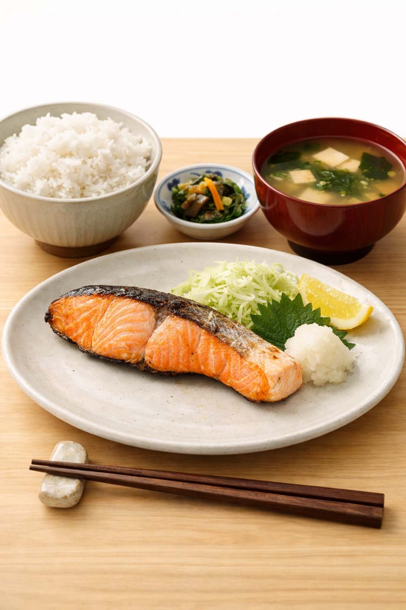

ほのか食堂


毎日食べたい、やさしい定食を。
ほのか食堂は、家庭料理の温かさを大切にした小さな食堂です。
味付けはやさしく、にんにくは控えめに。
どこか懐かしくて、ほっとするひと皿を目指しています。
焼き魚や唐揚げ、生姜焼きなど、
毎日でも食べられる定番のおかずを、ひとつひとつ丁寧にお作りしています。
湯気の立つ味噌汁と手作りの小鉢と一緒に、
ゆっくりとした時間をお過ごしください。
日替わり定食
その日の気分に寄り添う、やさしい定食をご用意しています。 静かに、丁寧に仕上げた一皿をお楽しみください。
こだわり
素材へのやさしさ
季節の味わいを活かし、素材そのものの声を大切にしています。
手仕事の丁寧さ
ひとつひとつの料理を、毎朝の仕込みから丁寧に手作りしています。
日々のごはんであること
特別ではないけど、ふっと心がほどけるような味を目指しています。
店舗情報
ゆっくりと食事を楽しめる、静かな食堂です。
日々のごはんを、丁寧にお作りしています。
ほのか食堂
営業時間 11:00–20:00
定休日 土曜・日曜
駐車場 2台あり
店舗情報ページへ